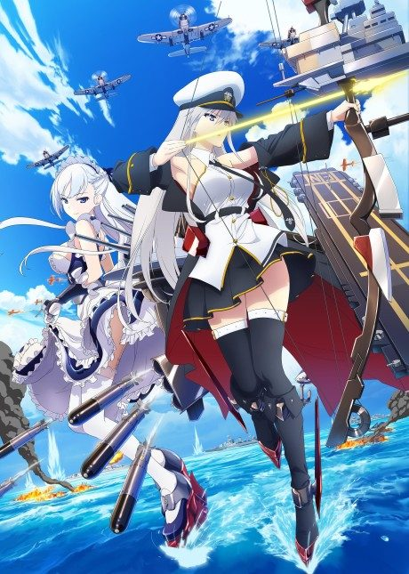

AZUR LANE
アズールレーン
An original anime, so there's no book to continue with.
5.8AniList score
—Animeter, no votes yet
12episodes
Rate it or report where you stopped
Is there a manga to continue?
StatusGame
Adapted from a game, so there is no manga to pick up from.
Sources: AniList, MyAnimeList